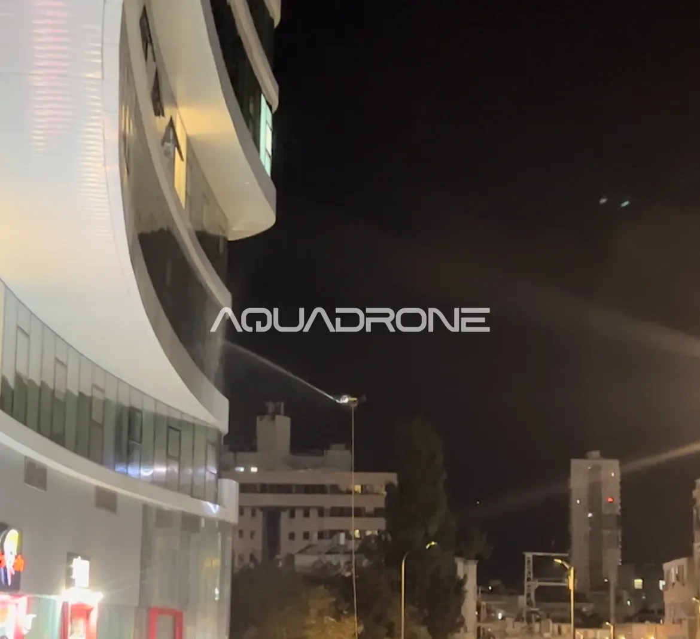

27/06/26
ניקוי חלונות בגובה ללא סנפלינג – הפתרון הבטוח למגדלי מגורים ומשרדים
ניקוי חלונות בגובה במגדלי מגורים ומשרדים היה במשך שנים שווה ערך אוטומטית לסנפלינג – צוות טכנאים תלוי על חבלים, יורד קומה אחר קומה, כשדיירים ועוברי אורח נדרשים להתחשב בעבודה שמתבצעת ממש מעל הראש שלהם. כיום קיימת חלופה: ניקוי חלונות בגובה באמצעות רחפן, ומספר ההולך וגדל של ועדי בית וחברות ניהול נכסים עוברים אליה.
מה הבעיה עם סנפלינג?
סנפלינג הוא שיטה ותיקה ומוכרת, אבל היא טומנת בחובה כמה חסרונות מובנים:
- סיכון בטיחותי לצוות — עבודה בגובה על חבלים היא אחת מסיבות התאונות המובילות בענף הבנייה והתחזוקה, כפי שמצוין גם בתקנות הבטיחות בעבודה של משרד העבודה
- תלות במזג האוויר — רוח חזקה יכולה לעצור עבודה לגמרי
- הפרעה משמעותית לדיירים — חלונות חסומים, טכנאים גלויים מול הבית, לעיתים למשך ימים
- זמן ביצוע ארוך — קומה אחר קומה, מבנה גדול יכול לקחת ימים שלמים
- עלות ציוד ובטיחות — רתמות, חבלים, אישורי עבודה בגובה – כל אלה מתגלגלים למחיר הסופי
איך ניקוי חלונות בגובה בעזרת רחפן פותר את זה?
רחפן ייעודי מבצע ניקוי חלונות בגובה מהאוויר, ללא שום עובד שנמצא פיזית על קיר המבנה. התהליך כולל ריסוס חומר ניקוי פעיל ואז שטיפה במים מסוננים, שמשאירה זכוכית נקייה ומבריקה ללא סימני טיפות.
היתרונות המרכזיים:
בטיחות מוחלטת — אין עובד תלוי בגובה, כך שהסיכון התעסוקתי כמעט מתבטל.
מהירות — מבנה שהיה לוקח ימים בסנפלינג מסתיים לרוב תוך שעות בודדות.
הפרעה מינימלית — אין חבלים מול חלונות, אין רעש טכנאים, אין צורך לחסום מרפסות או חלונות למשך זמן ממושך.
גישה לכל זווית — כולל פינות נסתרות וגיאומטריה מורכבת שקשה להגיע אליהן בשיטה מסורתית.
למי זה מתאים במיוחד?
ועדי בתים במגדלי מגורים — פחות תלונות דיירים, פחות תיאום מורכב.
חברות ניהול נכסים מסחריים — עבודה שלא פוגעת בפעילות היומיומית של השוכרים.
בתי מלון — ניקוי ללא הפרעה לאורחים.
מבני משרדים — עבודה שיכולה להתבצע גם בשעות פעילות מבלי לשבש את המשרד.
שאלה שכולם שואלים: האם התוצאה זהה לסנפלינג?
כן, ולעיתים אף טובה יותר. שילוב של לחץ מים מדויק, מים מסוננים (אוסמוזה הפוכה) שלא משאירים סימני טיפות, וצילום בזמן אמת לזיהוי אזורים מלוכלכים – מאפשר תוצאה אחידה ומקצועית שלא תלויה במיומנות האישית של טכנאי בודד. אפשר לקרוא עוד על התהליך המלא בעמוד ניקוי חזיתות המבנים שלנו.
מחפשים מידע לפי אזור? אנחנו עובדים בכל רחבי הארץ, וריכזנו פרטים בעמודים הבאים:
סיכום
ניקוי חלונות בגובה ללא סנפלינג אינו רק "פחות מסוכן" – הוא גם מהיר יותר, פוגע פחות בשגרת חיי הדיירים, ולעיתים אף זול יותר בחישוב כולל. עבור מבנים גבוהים בישראל, זו כבר לא טרנד – זו הפכה לסטנדרט המקצועי החדש.
רוצים לתאם הדגמה או לקבל הצעת מחיר למבנה שלכם? צרו קשר ונחזור אליכם עם פרטים מדויקים, או קראו עוד עלינו ועל השיטה שלנו.